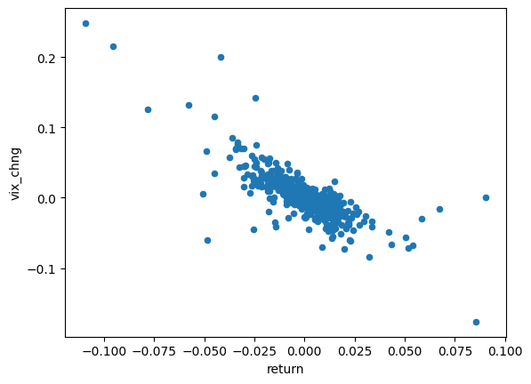
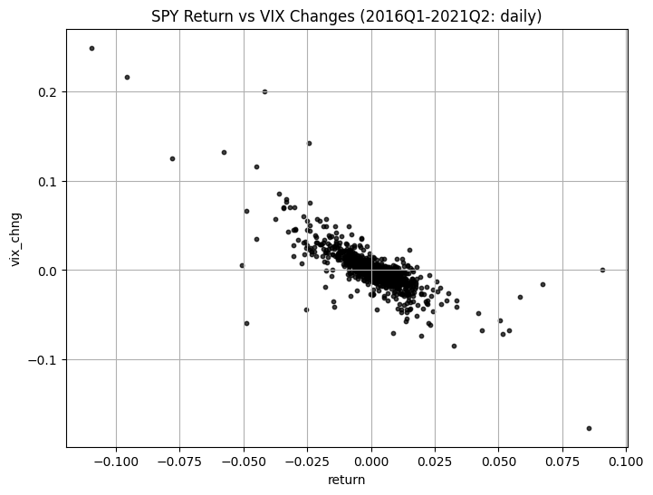

import numpy as np
import pandas as pd
import yfinance as yf
yf.pdr_override()
from pandas_datareader import data as pdr
%matplotlib inline11 Scatter Plots with pandas
The purpose of this chapter is to demonstrate the pandas built-in functionality for creating scatter plots.
The financial task we will accomplish is demonstrating SPY’s implied leverage effect: when the market suffers losses, implied volatility increases; when the market experiences gains, implied volatility decreases.
Our measure of SPY implied volatility will be the VIX index. To verify the above relationship, we will plot SPY daily returns against daily changes in the VIX for 2016Q1-2021Q2.
11.1 Loading Packages
Let’s begin by loading the packages we will need.
11.2 Reading-In Data
Next, let’s use pandas_datareader to read in the SPY and VIX data.
df_spy = pdr.get_data_yahoo(['SPY', '^VIX'], start='2016-01-01', end='2021-06-30')
df_spy = df_spy.round(2)
df_spy.head()[*********************100%***********************] 2 of 2 completed| Adj Close | Close | High | Low | Open | Volume | |||||||
|---|---|---|---|---|---|---|---|---|---|---|---|---|
| SPY | ^VIX | SPY | ^VIX | SPY | ^VIX | SPY | ^VIX | SPY | ^VIX | SPY | ^VIX | |
| Date | ||||||||||||
| 2016-01-04 | 175.91 | 20.70 | 201.02 | 20.70 | 201.03 | 23.36 | 198.59 | 20.67 | 200.49 | 22.48 | 222353500 | 0 |
| 2016-01-05 | 176.21 | 19.34 | 201.36 | 19.34 | 201.90 | 21.06 | 200.05 | 19.25 | 201.40 | 20.75 | 110845800 | 0 |
| 2016-01-06 | 173.98 | 20.59 | 198.82 | 20.59 | 200.06 | 21.86 | 197.60 | 19.80 | 198.34 | 21.67 | 152112600 | 0 |
| 2016-01-07 | 169.81 | 24.99 | 194.05 | 24.99 | 197.44 | 25.86 | 193.59 | 22.40 | 195.33 | 23.22 | 213436100 | 0 |
| 2016-01-08 | 167.95 | 27.01 | 191.92 | 27.01 | 195.85 | 27.08 | 191.58 | 22.48 | 195.19 | 22.96 | 209817200 | 0 |
The following code cleans up the data by isolating the the Close prices, resetting the index, and then changing the column names
df_spy = df_spy['Close'].reset_index()
df_spy.rename(columns={'Date':'date','SPY':'spy','^VIX':'vix'}, inplace=True)
df_spy.head()| date | spy | vix | |
|---|---|---|---|
| 0 | 2016-01-04 | 201.02 | 20.70 |
| 1 | 2016-01-05 | 201.36 | 19.34 |
| 2 | 2016-01-06 | 198.82 | 20.59 |
| 3 | 2016-01-07 | 194.05 | 24.99 |
| 4 | 2016-01-08 | 191.92 | 27.01 |
11.3 Adding Returns and VIX Changes to df_spy
Let’s add a return column to df_spy.
df_spy['return'] = df_spy['spy'] / df_spy['spy'].shift(1) - 1
df_spy.head()| date | spy | vix | return | |
|---|---|---|---|---|
| 0 | 2016-01-04 | 201.02 | 20.70 | NaN |
| 1 | 2016-01-05 | 201.36 | 19.34 | 0.001691 |
| 2 | 2016-01-06 | 198.82 | 20.59 | -0.012614 |
| 3 | 2016-01-07 | 194.05 | 24.99 | -0.023992 |
| 4 | 2016-01-08 | 191.92 | 27.01 | -0.010977 |
Next, let’s calculate the daily change in the VIX, and put it in a new column called vix_chg.
df_spy['vix_chng'] = df_spy['vix'].diff()
df_spy.head()| date | spy | vix | return | vix_chng | |
|---|---|---|---|---|---|
| 0 | 2016-01-04 | 201.02 | 20.70 | NaN | NaN |
| 1 | 2016-01-05 | 201.36 | 19.34 | 0.001691 | -1.36 |
| 2 | 2016-01-06 | 198.82 | 20.59 | -0.012614 | 1.25 |
| 3 | 2016-01-07 | 194.05 | 24.99 | -0.023992 | 4.40 |
| 4 | 2016-01-08 | 191.92 | 27.01 | -0.010977 | 2.02 |
The return column in df_spy is expressed as a decimal, so let’s change the vix and vix_chng columns of df_vix to also be expressed as decimals.
df_spy['vix'] = df_spy['vix'] / 100
df_spy['vix_chng'] = df_spy['vix_chng'] / 100
df_spy.head()| date | spy | vix | return | vix_chng | |
|---|---|---|---|---|---|
| 0 | 2016-01-04 | 201.02 | 0.2070 | NaN | NaN |
| 1 | 2016-01-05 | 201.36 | 0.1934 | 0.001691 | -0.0136 |
| 2 | 2016-01-06 | 198.82 | 0.2059 | -0.012614 | 0.0125 |
| 3 | 2016-01-07 | 194.05 | 0.2499 | -0.023992 | 0.0440 |
| 4 | 2016-01-08 | 191.92 | 0.2701 | -0.010977 | 0.0202 |
11.4 Scatter Plot
Now that we have our data wrangled, we are in position to use the DataFrame.plot.scatter() method to plot daily SPY return against daily changes in the VIX.
df_spy.plot.scatter('return', 'vix_chng');
The following code improves the aesthetics of our plot:
df_spy.plot.scatter(
x = 'return',
y = 'vix_chng',
grid=True ,
c='k',
alpha=0.75,
s=10, # changing the size of the dots
figsize=(8, 6),
title='SPY Return vs VIX Changes (2016Q1-2021Q2: daily)',
);